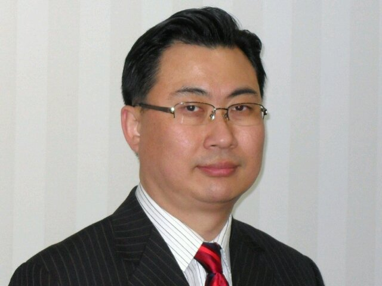
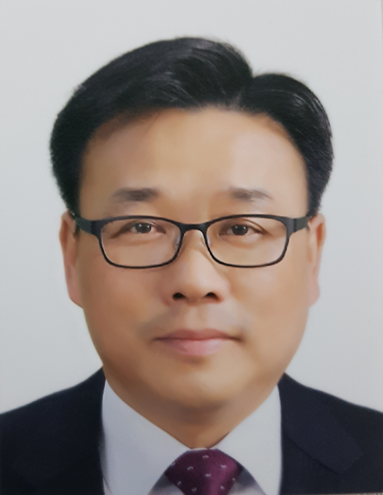
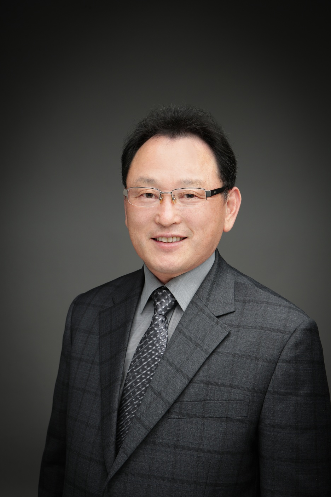
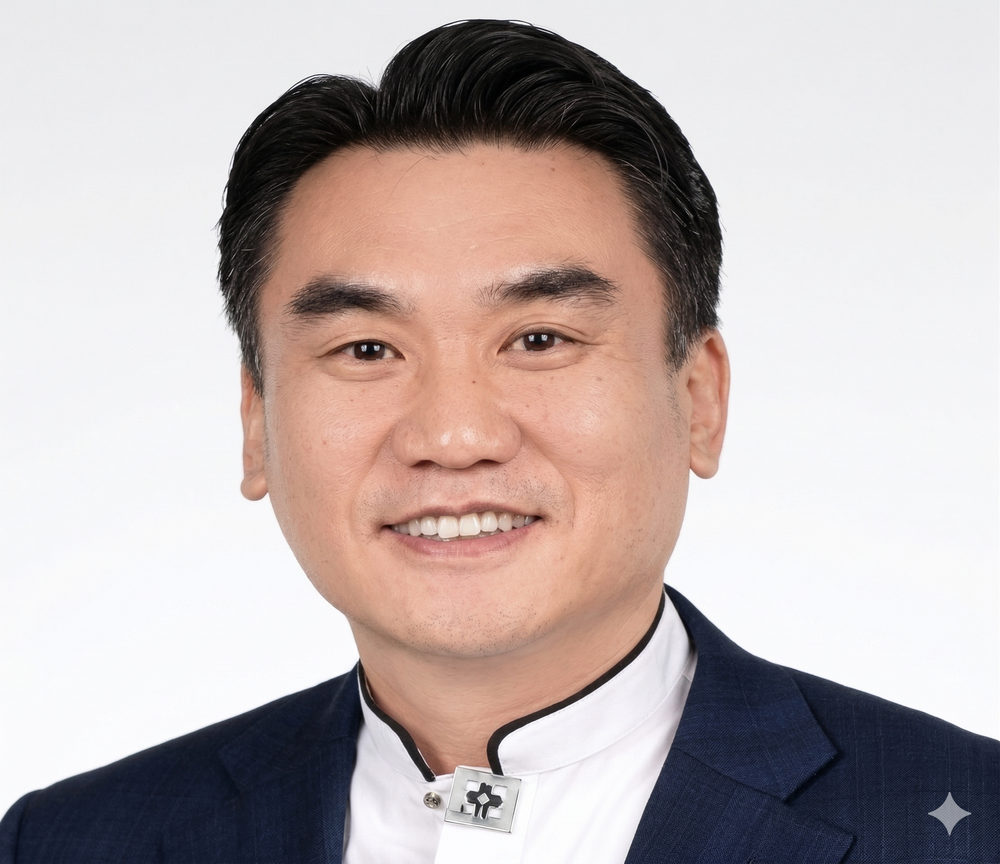
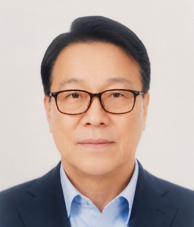
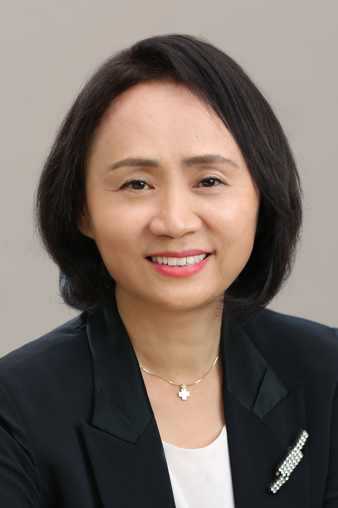

남궁선
교수/총장/교육학박사- 조직신학 / 교회헌법
- 서울기독대학교 일반대학원
- 서울한영대학교 및 동대학원

채 윤
교수/학생처장/상담학박사- 실천신학/기독교상담
- 평택대학교 피어선신학전문대학원
- 서울한영신학대학교 및 동대학원

박영훈
교수/교무처장/신학박사- 설교학 / 예배학
- 서울한영대학원
- 서울한영대학교
- General Trias College of Cavite

김낙신
교수/교육학박사- 설교학 / 목회학 / 예배학
- Emilio Aguinaldo College대학원
- Baguio Central University
- 영지대학교
JONALYN KIM
교수/교육학박사- 대학영어
- Philippine Christian University 대학원
- Cavite State University

김병극
교수/목회학박사- 옥중서신 / 신학과윤리
- 서울한영대학원
- 영지대학교

우상용
교수/철학.행정학박사- 설교학 /기독교예전/교회행정학
- 평택대학교대학원 피어선신학전문대학원
- 서울한영대학교 및 동대학원
박효숙
교수/학과장/기독교상담학/목회상담학박사- 기독교영성/목회상담학
- 평택대학교신학전문대학원
- 한세대학교 신학대학원

이영희
교수/목회상담학박사- 이상심리학 / 교회사
- 서울기독대학교대학원
- 영지대학교

서형범
교수/신학박사- 실천신학 / 공관복음 예배학
- General Trias College of Cavite
- 한성신학대학교
장광천
교수/종교음악명예박사- 교회음악 / 예배학
- General Trias College of Cavite
- 영지대학교

김진국
교수/신학박사- 구약개론/대선지서
- General Trias College of Cavite
- 영지대학교

백만숙
교수/학과장/신학과/신학박사- 실천신학/목회학상담
- 서울한영대학원
- 서울한영대학교